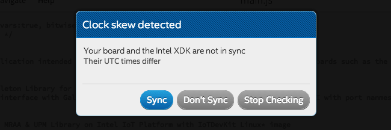
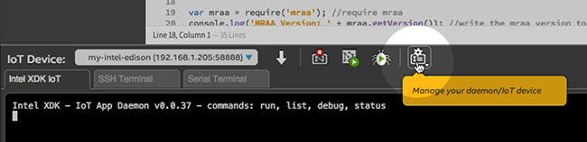
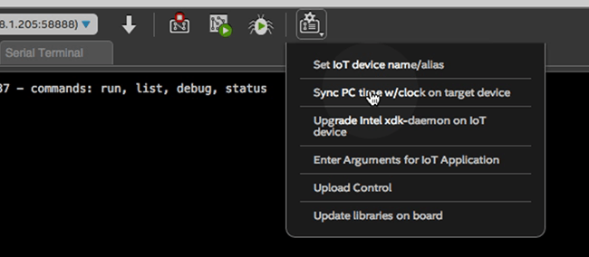
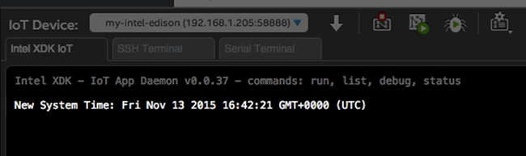

Get a “Clock skew detected” message?

Click “Sync” to update the clock time on your Intel® Edison now.
Otherwise, sync the clock manually by following the steps below at any time.
-
In the bottom toolbar, click the “Manage your daemon/IoT device” icon.

-
Select “Sync PC time w/ clock on target device”.

-
Wait one moment. A message in the console log will appear to confirm the updated clock time.
